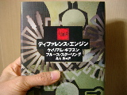
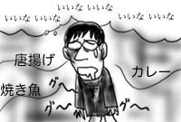
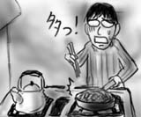

会社を休んで銀行に行ってきました．
何かちょっとした手続きをしようとすると，ほぼ半日は潰れてしまいます．もっと便利にならないものか．案の定，今日も待っている間に読みかけの本を一冊読み終えてしまいました．押忍！
さらに待ち続けていると，3時を告げるアナウンスが流れ，シャッターが閉まりはじめました．閉じ込められた！(嘘)
密閉空間では，慇懃無礼な感じなんだけど慇懃に成り切れてない(単なる無礼です)おじさんが，危なっかしい敬語を話しながら(というか丁寧語までしか話せない)シャッターの横の非常扉を開け閉めして人をさばいていました．聞いていると訂正したくてたまりません．彼に「受付終了」を告げられた人は，みな不機嫌な顔をして帰ってゆきます．
「あの人の人件費って僕なんかより断然上なんだろうなぁ」と思うといろいろと複雑な気分に．銀行怖い．
帰りにBook Offでブルース・スターリング『ネットの中の島々』(早川SF文庫)を発見するも，上巻しか無くて泣く泣く断念．最近，微妙に自分の中でブルース・スターリング ブームなので，かなり悔しいです．誰だよ，下巻だけ抜いたの!?
帰宅してから，また本を読んだりしてダラダラしていたらあっという間に深夜に．プッチ神父の本当の力が目覚めたので，時間がやたら早く進みます．ストーンフリーはなくていいから，ストレスフリーで過ごしたい．
ボクの貴重な休暇 -完-
先日とは打って変わって，今日はやたら人がまばらです．駅まで歩いても，あまり人を見かけないし，どの電車に乗っても必ず座れます．山手線でさえも余裕の着席．一夜にして人口が半減？間引き？
そして出先で以下のようなものを見かけたため，思わず写メールで撮影してしまいました．
↑スパイス駐車場．
僕もスパイスは大好きさ！きっとみんなも…(突然，マイノリティ的不安に襲われ，失踪)．
HYDROGEN DUKEBOXから，Lee NorisのMetamatic，Norken両名義ごとに出たRemixアルバム「RewindInMyManor」「BlueDevide:Remodelled」がかなりいい感じです．普段はRemixものを敬遠しがちな僕ですが，オリジナル曲が割に淡白な分，Remixでいい感じに守り立てられてて，面白く聴けます．
ここのところずっと，大学時代に紛失してしまったギブスン&スターリングの『ディファレンス・エンジン』(角川書店)を読み返したくてたまらなかったのですが，紛失した時点で本書はすでに絶版状態．普通の本屋では手に入りません．
古本屋に出かける度にかすかな期待を込めて本棚を確認していたのですが，それなりに希少本らしく，なかなか見つからずにいたのです．
ところが先日，オンライン古書店を片っ端から検索して調べたところ，広島の古本屋さんに在庫があることを発見しました．喜び勇んで発注しておいたところ，本日，かなりの美麗本が到着しました．さすがに帯なしですが，うれしいことには変わりなく，久しぶりに本を手に入れて小躍りしてしまいました，オンライン万歳！

しかし，『ディファレンス・エンジン』ですら発行は12年前ですか．当時はほとんど理解できずに挫折しそうになりながら読んだことを覚えています．今回は多少なりとも，まともに読めるだろうと思います．あと，装丁が格好良すぎだと思います．
朝起きてゴミを出そうと思ったら，ゴミ置き場にすごい量のゴミ袋が山と積まれていました．僕がここへ引っ越して来て見た中で，一番多かったのではないでしょうか．
それから自転車(折り畳みたくなる号)に跨がって公道へと飛び出したのですが，いつにない量の車が列をなしており驚愕．角を曲がると，今度は普段は誰も歩いていないのに，今日に限ってたくさんの人が道を歩いています．今日って祭り？(田舎者の発想)
もしくは一夜で人口が倍増．さいたま市民がすごい勢いで流入してきたか，バイオテロだと思います．ウパ．
今日は，歯の治療の最終日です．
というわけで，夕方の休み時間に会社を抜け出して，歯医者まで行ってきました．今日が最終日ということで，抜歯後の経過を看た後は，歯石などをまんべんなく削ぎ落としました．
歯石を落としたのは初めてだったのですが，思ってたよりも厳しかったです．割と激しく機械に蹂躙されます．びゅーびゅー血が出るし！(歯周ポケットです)．そして，ずっと口を開けていたため，かなりアゴがだるくなりました．普段どれだけ他人に口を開いていないかよく分かると言うものです．そりゃハミ出しもするよね…(ハミ男子)．
そして，歯石が取れたせいでなんだかスキッ歯になったような感覚を味わいながら，再び会社へと戻ったのでした．夕暮れ時．昼食が完全に消化され，脳が空腹を訴え出した状態で会社への道を歩いていると，各家庭の台所から，脂の乗った魚が焼ける香ばしい匂い，カラリと揚がった若鶏の匂い，ぐつぐつとカレーを煮る匂い，などが次々と襲いかかって来ました．匂い攻めだ！

美味しいおやつにほかほかご飯，子供の帰りを待ってるだろな．僕は帰ろ，会社に帰ろ．全然悔しくなんか，グーグーグー(胃)．
焼そばが食べたくなったので，材料を買い込んで来ました．
もやしやらキャベツやら人参やらを炒める時に，不精をして詰め替えパックの胡椒をそのまま振りかけたところ，真っ黒な野菜炒めになりました．同じ重さの金と交換したい．
胡椒をそぎ落としつつ，豚肉と麺を炒めてなんとか調理を続けたのですが，リカバリする事で頭がいっぱいで，気が付くとフライパンに山盛りの焼そばが完成していました．これが胃袋に収まるのか…．

かなり憂慮したのですが，実際食べてみると意外にもペロリと平らげてしまいました．麺類は漫画形式と同じで，気乗りしなくてもついつい食べ進められるので危険だと思います．
週末恒例，大宮グレートハンティング！(挨拶)
というわけで大宮に買い物に出かけました．とはいえBookOffも不作で，結局CD１枚を買った以外は，ずっとゲーセンで「ケツイ」をやっていました．未だ3面は越えられず．全然先が見えません．あと何だかプレイする度に1面ボスの強さが変わります．大した弾も出さずにあっさり死んだり，やたら弾をバラまいたり．一体何がトリガなのかさっぱり分かりません．ちょっと辛くなってきたかも．
買ったFlatic「NANO/YOUTH」(plop)は，かなりよかったです．方々で大プッシュされている同レーベルのfonicaよりこっちの方が好み．聴いていると空間が徐々に定義されていくような構成力と音響処理が素敵です．
帰って来てからバクスターの『プランク・ゼロ』(早川SF文庫)を読んでいたら，いつの間にか気を失っており，晩飯を食べ損ないました．なんとも冴えません．
1/30-31分の日記も同時に更新していますので，あわせてお楽しみ下さい．